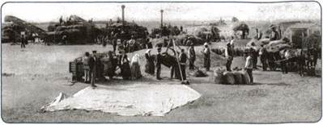
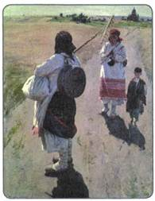
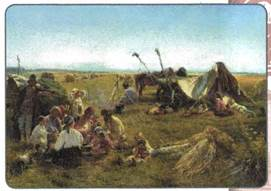
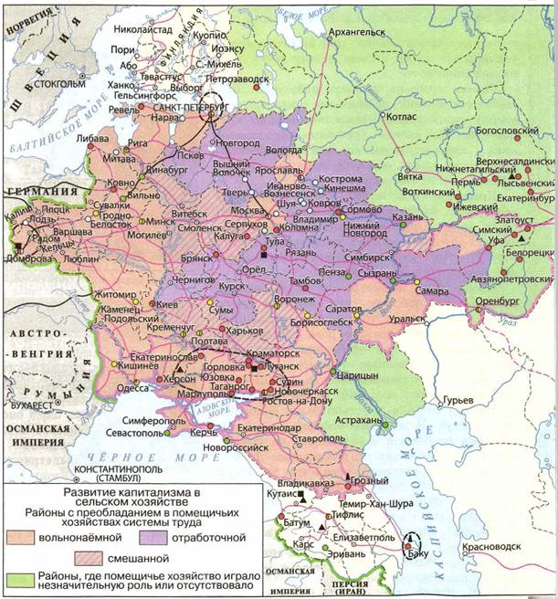
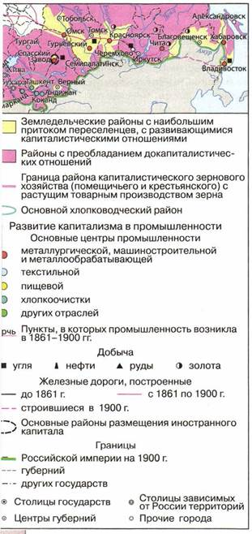
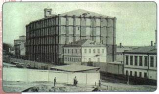
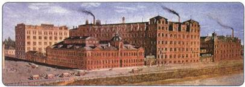

Какое влияние оказали реформы 1860—1870-х гг. на экономическое развитие страны?
1. Состояние сельского хозяйства
Отмена крепостного права открыла путь новым экономическим отношениям. После 1861 г. в деревне начался переход к капиталистическим формам хозяйства. Однако он был затруднён из-за непоследовательности реформы, сохранившей многие пережитки крепостного права. Раздел земли во многих губерниях производился в пользу помещиков.
Крестьяне в большинстве своём получили небольшие наделы, основная часть угодий осталась в собственности помещиков: это были пашни, луга, леса, водопои, необходимые крестьянам для полноценного ведения хозяйства (и потому крестьяне вынуждены были арендовать их). У помещика остались и возможности принуждать крестьян работать на господской земле в законном порядке в период их временнообязанного состояния, который растянулся на долгие годы.
Вспомните, что такое временнообязанное состояние крестьян.
Реформа 1861 г., дав крестьянам личную свободу, сохранила взаимозависимость помещичьего и крестьянского хозяйств. Для ведения хозяйства с помощью наёмной рабочей силы помещикам нужно было иметь значительные денежные суммы: требовалось платить работникам, приобретать собственный инвентарь и рабочий скот. Ведь до отмены крепостного права крестьяне обрабатывали барскую землю своими орудиями. По условиям реформы помещики получили от государства большие суммы денег, однако многие из них не сумели использовать эти деньги для перестройки своих хозяйств, пустив их по ветру. А те помещики, которые имели ранее перед государством задолженность (закладывая и перезакладывая свои имения), получали меньшие суммы, поскольку правительство при выдаче выкупа удерживало с них в свою пользу всю сумму их задолженности.

Использование сельскохозяйственной техники при обмолоте зерна. Вторая половина XIX в.

На работу. Художник С. А. Виноградов

Крестьянский обед в поле. Художник К. Е. Маковский
Самым простым способом получения прибыли для многих помещиков стала сдача в аренду своих земель своим же бывшим крепостным. За аренду крестьяне расплачивались с ними отработками: они обрабатывали помещичьи земли, оставшиеся не сданными в аренду, своим инвентарём.
Крестьяне вынуждены были арендовать землю у своих бывших помещиков, отказаться от аренды они не могли, так как по реформе получили недостаточно земли для того, чтобы и обеспечить себя, и исправно платить выкупные платежи государству.
Кроме того, несмотря на значительный рост цен на хлеб, арендная плата за землю росла ещё быстрее. Крестьянские хозяйства были обременены всякого рода сборами (помимо выкупных платежей, они уплачивали также государственные и земские налоги).
По подсчётам современников, на среднюю семью приходилось около 30 рублей различных платежей, что для крестьян было непосильной суммой. К тому же реформа, освободив крестьян от личной зависимости, не уравняла их с помещиками в гражданских правах.
Развитию сельского хозяйства по капиталистическому типу серьёзно мешал и тот факт, что реформа оставила без изменений существование крестьянской общины.
Именно общине передавалась вся надельная земля. Затем община в соответствии с количеством членов семьи распределяла пахотную землю между крестьянскими дворами. Периодически, в связи с изменением состава семей, происходило перераспределение пахотной земли и связанных с ней податей. Таким образом, сохранялись ежегодные переделы земли внутри общины.
Крестьянский надел был разбит на несколько участков, расположенных в разных частях общинных угодий. Это давало возможность обеспечить каждой семье сносное существование. Например, в засушливый год участок, расположенный в низине, мог дать приличный урожай; в дождливые годы выручал участок на пригорке. Община помогала крестьянам выплачивать подати, поддерживала примерно равный достаток своих членов. В ней существовали круговая порука и ограничения в свободе передвижения, что сковывало хозяйственную деятельность крестьян.


Экономическое развитие России в середине XIX в.
2. Пореформенное развитие промышленности
В первые годы после реформы 1861 г. вопреки ожиданиям многих в России не наблюдался быстрый рост промышленного производства, увеличение количества фабрик и заводов. Хозяева предприятий ждали отмены крепостного права, сознавая, что для развития фабричного и торгового дела нужны свободные рабочие руки, широкий рынок труда. Реформа, казалось бы, решала эту проблему, поскольку, с одной стороны, крестьяне освобождались от личной зависимости, а с другой — многие из них готовы были идти в город на заработки.
Однако оказалось, что на первых порах решающими стали иные обстоятельства. На многих фабриках и заводах к моменту отмены крепостничества работали не наёмные, а прикреплённые к ним рабочие. Как только эти люди получили свободу, ненависть к подневольному труду заставила их бросить работу и уйти с заводов. Не помогла вернуть рабочих и выросшая в несколько раз заработная плата. Поэтому в первое время после реформы многим предприятиям пришлось сократить производство. Это было особенно характерно для железоделательных заводов и суконных фабрик, в широких масштабах применявших труд крепостных крестьян.
Лишь через несколько лет, освоившись в новых условиях, промышленные предприятия начали увеличивать своё производство. Несмотря на трудности, российская экономика сумела достаточно быстро перестроиться. Это случилось во многом благодаря экономической политике государства.
3. Финансовая политика правительства
Экономические реформы правительство начало с изменений в деятельности банков. В 1860 г. был открыт Государственный банк Российской империи (его первым управляющим стал известный меценат барон А. Л. Штиглиц). Банк должен был «содействовать силой кредита» развитию наиболее важных для государства отраслей промышленности (металлургической, машиностроительной, сахарной, текстильной), а также поддерживать частные банки. При этом в устав Государственного банка вводились статьи, по которым его денежные средства не могли быть использованы казной.
С 1860-х гг. появились и частные банки. В 1860 г. был создан Московский купеческий банк, ставший первым частным банком в Москве. В 1870 г. для финансирования промышленных предприятий был основан Волжско-Камский банк. Его учредил один из виднейших предпринимателей В. А. Кокорев, выходец из мещан, разбогатевший на винных откупах и многое сделавший для поддержки отечественной промышленности и торговли. Создание частных банков оказало огромное влияние на экономическое развитие России. Без них было бы невозможно становление новых форм предпринимательства.
4. Железнодорожное строительство
Железнодорожное строительство было отраслью, развитие которой всемерно поощрялось правительством. Заинтересованность властей объяснялась двумя причинами. Во-первых, Крымская война показала серьёзное отставание транспортной сети России от систем сообщения в западноевропейских странах. Во-вторых, правительство стремилось для получения дополнительных доходов увеличить вывоз хлеба за границу, поэтому дороги прокладывались из хлебных губерний к морским портам. Была разработана широкая программа привлечения к железнодорожному строительству частных лиц и иностранных капиталистов, предусматривавшая для них существенные льготы.
В 1870-е гг. происходило активное строительство железных дорог. Если к 1861 г. протяжённость железных дорог в России составляла 2 тыс. км, то к началу 1880-х гг. — уже свыше 22 тыс. км. На этом строительстве выросло новое поколение предпринимателей, тесно связанных с бюрократией и казёнными заказами, которые нажили огромные состояния.
Построив железнодорожную ветку в 500—600 вёрст, капиталист клал в карман 25—30 млн рублей. Особенно щедро правительство платило за строительство магистралей, связанных с военными нуждами. Кроме того, оно разрешило некоторым предпринимателям приобретать за границей за государственный счёт вагоны и паровозы, беспошлинно ввозить рельсы и другие материалы.
Строительство новых дорог было обусловлено в первую очередь интересами промышленности и торговли. К 1870-м гг. были введены в строй важные железнодорожные линии: Москва — Курск, Курск — Харьков, Харьков — Одесса, Харьков — Ростов, Москва — Ярославль, Москва — Тамбов, Тамбов — Саратов, Москва — Брест, Москва — Нижний Новгород. Грузооборот железных дорог за 16 пореформенных лет увеличился в 25 раз, в то время как оборот речного транспорта — лишь на 59 %.

Прохоровская мануфактура. Конец XIX в.
Железнодорожное строительство способствовало развитию многих отраслей промышленности, так как предъявляло повышенный спрос на металл (рельсы, вагоны, паровозы), топливо, предметы широкого потребления для целой армии рабочих-строителей.
5. Промышленный подъём
Вспомните, когда в России начался промышленный переворот. Какие особенности он имел?
Отмена крепостного права положительно сказалась на развитии лёгкой промышленности. Во второй половине 1860-х гг. здесь наблюдался подъём: множество крестьян, которые ранее владели текстильными, кожевенными предприятиями, получили наконец свободу.
В развитии тяжёлой промышленности подъём начался позже, в 1880-е гг. Но здесь он приобрёл небывалые темпы: в 1880-е гг. окончательно завершился промышленный переворот — фабричное производство восторжествовало над мелкотоварным и мануфактурным.
Главным районом металлургического производства продолжал оставаться Урал. Но появились и новые промышленные районы. В Закавказском районе на Каспии, близ Баку, началась добыча нефти. Южный район (украинские земли и Южная Россия) стал ещё одним центром металлургии. Здесь в бассейне реки Северский Донец (Донбасс) были разведаны промышленные залежи железной руды и угля, а неподалёку, в Кривом Роге, — крупные месторождения железной руды. Английский промышленник Джон Юз основал в Донбассе металлургический завод, получив правительственный заказ на производство рельсов.
По добыче каменного угля — основного источника энергии в XIX в. — Донбасс также вышел на первое место.
Промышленные районы на юге России были свободны от пережитков крепостничества, и здесь развитие промышленности шло гораздо быстрее, чем в старых центрах.
Период 1860—1870-х гг. стал временем становления машиностроительной промышленности (до 1861 г. в России производились лишь сельскохозяйственные машины). Машиностроение было тесно связано со строительством железных дорог: развивалось прежде всего строительство паровозов и вагонов. Действовали заводы в Сормово (близ Нижнего Новгорода), в Коломне. Путиловский завод в Петербурге обеспечивал российские дороги рельсами. На Коломенском заводе впервые в стране было организовано строительство железнодорожных мостов, товарных вагонов и платформ.
Тем не менее, как и в дореформенный период, ведущие позиции в промышленности занимало хлопчатобумажное производство. Рост цен на хлопок на мировом рынке заставил промышленников скупать земельные участки в Средней Азии, недавно присоединённой к России. Они раздавали местным жителям качественные сорта египетского и американского хлопка и заключали договоры на покупку будущих урожаев. Пионером «движения в Среднюю Азию» стал фабрикант С. В. Морозов. Продукция хлопчатобумажной отрасли за 30 пореформенных лет выросла в 4 раза.

Кондитерская фабрика «Эйнем» в Москве. Конец XIX в.
Несмотря на мощный рывок, российская промышленность значительно отставала от промышленности передовых капиталистических стран по масштабам и размерам производства на душу населения, техническому оснащению и темпам роста производительности труда.
Развитие производства привело к увеличению численности занятых в производстве рабочих. Шло оформление нового социального слоя — пролетариата. За неполных 15 лет (с 1865 по 1879 г.) количество промышленных рабочих выросло в полтора раза и достигло почти миллиона человек. Пополнение шло за счёт крестьян, приходивших в город на заработки и постепенно отрывавшихся от сельского хозяйства. В это же время российский пролетариат начал борьбу за свои права. Первым крупным выступлением рабочих стала стачка в 1872 г. на бумагопрядильной Кренгольмской мануфактуре в г. Нарва (в Эстляндии).
Происходило также складывание слоя буржуазии. В число предпринимателей — основателей заводов и фабрик — входили представители как дворян, так и других сословий. Многие успешные предприниматели были выходцами из мещан, крестьян, купечества. Своё производство они передавали по наследству, и так складывались целые династии предпринимателей (Гучковы, Морозовы, Коноваловы и др.).
ПОДВЕДЁМ ИТОГИ
После отмены крепостного права в российской деревне начался переход к капиталистическим формам хозяйства. Однако крепостнические черты Крестьянской реформы замедляли этот процесс. Значительно быстрее перестраивалась промышленность. Рывок в промышленном производстве был достигнут во многом благодаря целенаправленной экономической политике государства.
Вопросы и задания для работы с текстом параграфа
1. Какие недостатки имела Крестьянская реформа? 2. Поясните, в чём заключалась взаимозависимость крестьянского и помещичьего хозяйств после Крестьянской реформы 1861 г. 3. Какие факторы мешали успешному развитию сельского хозяйства после реформы 1861 г.? 4. Сохранила ли реформа 1861 г. существование крестьянской общины? 5. Каковы были принципы общинного хозяйства? 6. Расскажите об основных направлениях развития промышленности в пореформенное время. 7. Каким образом железнодорожное строительство способствовало промышленному перевороту в России? 8. Какие новые социальные слои возникли в результате промышленного переворота?
Работаем с картой
Проследите, опираясь на карту, направления и основные пункты железных дорог Российской империи.
Изучаем документ
ИЗ ЗАПИСКИ МИНИСТРА ФИНАНСОВ М. X. РЕЙТЕРНА К ИМПЕРАТОРУ
Сооружение железных дорог можно назвать не только настоятельной потребностью, но и положительно важнейшею для будущности России задачею правительства... даже в политическом отношении возможность скорого передвижения от центра к окраинам должна умножить силу России.
Объясните точку зрения автора документа. Считаете ли вы её обоснованной?
Думаем, сравниваем, размышляем
1. Как вы думаете, улучшилось или ухудшилось положение крестьян после Крестьянской реформы 1861 г.? Приведите аргументы в доказательство своей точки зрения. 2. Объясните, почему освобождение от личной зависимости не сделало крестьян равными помещикам в имущественном отношении. 3. Какую роль в сельском хозяйстве пореформенного периода играла аренда земли? Почему в тех условиях её нельзя рассматривать как меру капиталистического переустройства сельского хозяйства? 4. Какие отрасли промышленности были связаны с железно-дорожным строительством? Поясните эту связь на примерах. 5. Выясните, как происходило строительство новых железных дорог в 1860—1880-е гг. Подготовьте сообщение об одной из таких железных дорог. 6. Используя Интернет, найдите информацию о деятельности одного из русских предпринимателей второй половины XIX в. и подготовьте краткое устное сообщение.